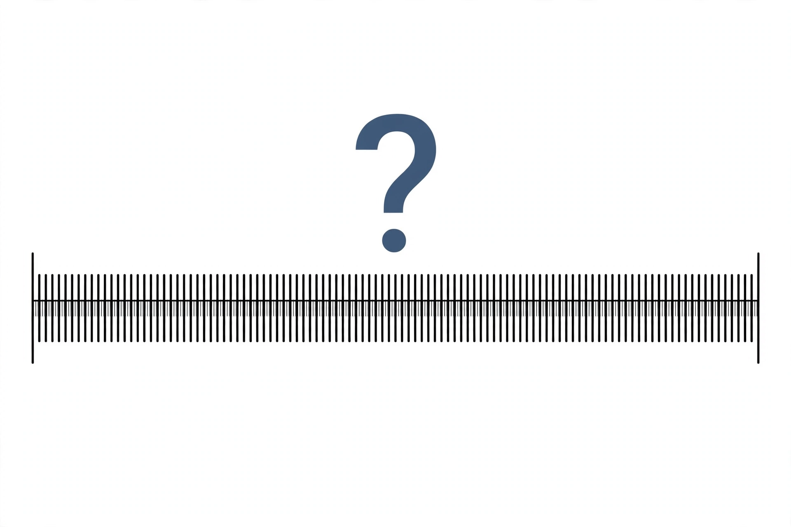

Continuum hypothesis

[Image: A number line of real numbers with a question mark over possible intermediate infinities between countable and continuum]
The continuum hypothesis is the statement, first proposed by Georg Cantor in 1878, that there is no set whose cardinality is strictly between that of the integers and that of the real numbers — no infinity of intermediate size.
It was the first of David Hilbert's famous list of 23 problems, announced in 1900. The answer turned out to be unlike any other problem on the list: Kurt Gödel proved in 1940 that the hypothesis cannot be disproved from the standard axioms of set theory, and Paul Cohen proved in 1963 that it cannot be proved either — it is independent.
Aftermath
Cohen's method, called forcing, revolutionised set theory and earned him the Fields Medal in 1966. Set theorists continue to debate whether new, natural axioms should settle the question, making the continuum hypothesis a live issue in the philosophy of mathematics.
The generalised continuum hypothesis extends the claim to every infinite set and its power set; it too is independent.